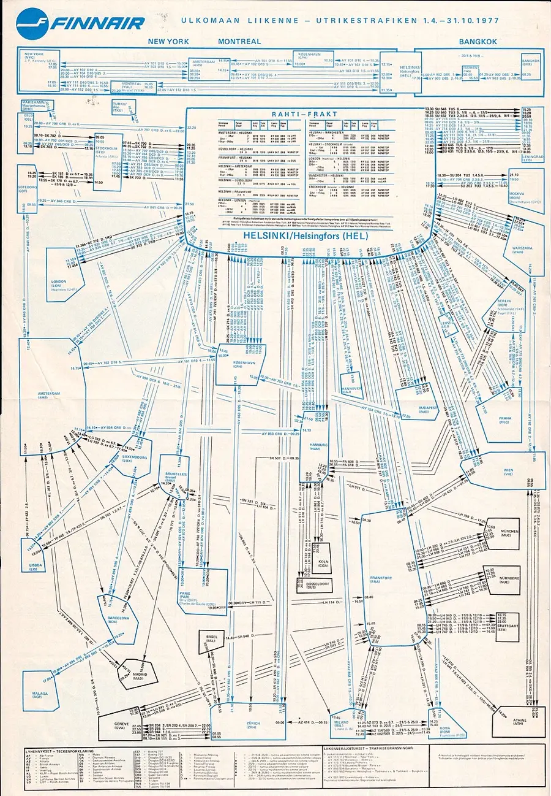

대표 로고대표 브랜드 마크
대표 로고대표 브랜드 마크핀에어 Finnair
핀에어(Finnair)는 핀란드에 본사를 둔 항공사이다. 헬싱키 반타 국제공항을 허브 공항으로 하며, 다양한 노선을 운항한다.
최종 업데이트
핀에어는 어떤 브랜드인가
핀에어는 핀란드에 본사를 둔 항공사로, 헬싱키 반타 국제공항을 허브 공항으로 삼아 노선을 운항한다. 1999년에는 세계적인 항공 동맹인 원월드에 가입하여 글로벌 네트워크를 확장했다.
2001년에는 에스토니아 탈린을 기반으로 하는 아에로 항공을 설립했으며, 2003년에는 스웨덴 저가 항공사인 플라이 노르딕의 소유권을 인수하여 사업을 확장했다. 2006년에는 세계에서 안전한 항공사 중 하나로 선정된 바 있다.
현재 핀란드 정부의 주도 아래 완전히 민영화된 형태로 운영되고 있다.
핀에어는 어떻게 시작되고 성장했나
1923년 11월 1일 브루노 루칸데르가 아에로로 설립했다. 제2차 세계대전 중 항공기의 절반이 핀란드 공군에 차출되었고, 전쟁 후 핀란드 정부가 주식을 인수하며 1947년 11월부터 유럽 운항을 재개했다.
1953년에 현재의 이름으로 변경했으며, 1962년에는 민영 항공사인 피니시 항공과 카르 항공의 주식을 인수하여 규모를 확대했다. 1979년에는 국내선 운항을 위해 자회사인 핀항공을 설립했고, 1983년에는 서유럽에서 처음으로 일본에 논스톱 항로를 개설하는 성과를 보였다.
핀에어의 브랜드 아이덴티티는 무엇인가
핀에어는 핀란드 국적의 항공사로, 브루노 루칸데르가 설립한 오랜 역사를 가지고 있다. 핀란드 정부의 주도로 민영화되어 운영되고 있으며, 특정 항공 동맹에 가입하여 글로벌 네트워크를 구축하고 있다.
핀에어의 대표 제품과 서비스는 무엇인가
핀에어는 헬싱키 반타 국제공항을 허브 공항으로 삼아 여객 운송 서비스를 제공한다. 여러 지역으로 향하는 노선들을 운항하며, 다른 항공사들과 코드셰어 협정을 체결하여 서비스 네트워크를 확장하고 있다.
특정 항공 동맹 회원사들과도 협력 관계를 유지하며, 이를 통해 승객들에게 다양한 연결편을 제공한다. 현재 여러 종류의 항공기를 보유하여 효율적인 운항을 꾀하고 있다.
핀에어는 지금 어떤 상태인가
2012년에 핀란드 정부의 주도로 완전히 민영화되었다. 현재 핀에어는 특정 노선들을 운항하고 있으며, 여러 항공사들과 코드셰어 협정을 맺고 있다.
또한 특정 기종들을 보유하여 운항에 활용하고 있다.
핀에어 로고는 어떻게 변해왔나
대표 로고대표 브랜드 마크사진으로 보는 핀에어의 역사

자주 묻는 질문
핀에어는 어느 나라 브랜드인가요?
핀에어는 핀란드의 모빌리티 브랜드입니다.
핀에어는 언제 설립되었나요?
핀에어는 1923년 설립되었습니다.
핀에어의 브랜드 아이덴티티는 무엇인가요?
핀에어는 핀란드 국적의 항공사로, 브루노 루칸데르가 설립한 오랜 역사를 가지고 있다.
핀에어의 대표 제품은 무엇인가요?
핀에어는 헬싱키 반타 국제공항을 허브 공항으로 삼아 여객 운송 서비스를 제공한다.
핀에어는 현재 어떤 상태인가요?
2012년에 핀란드 정부의 주도로 완전히 민영화되었다.
핀에어의 본사는 어디에 있나요?
핀에어의 본사는 Veromies에 있습니다(위키데이터 기준).
핀에어의 공식 웹사이트는 어디인가요?
핀에어의 공식 웹사이트는 https://www.finnair.com/ 입니다.
출처와 검증
핀에어 관련 참고: 공식 웹사이트 · 위키데이터 Q201821 · 한국어 위키백과 · 영어 위키백과. 브랜드명은 한글과 원어를 함께 표기하되 데이터에 없는 표기는 만들지 않습니다. 기원 국가·설립연도는 검수된 정의문에서 확인된 값을 우선하고, 없을 때만 공식 웹사이트 URL이 일치하는 위키데이터 개체의 값을 씁니다. 웹 첫 보관은 인터넷 아카이브가 공식 사이트 첫 화면을 처음 보관한 날로, 사이트 개설일과 다를 수 있습니다. 위키데이터 값은 2026-09-12 기준입니다.